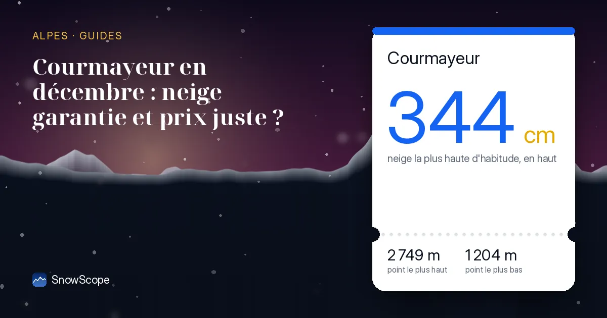

Courmayeur en décembre : neige garantie et prix juste ?
Pour un débutant prudent qui prévoit un séjour au ski en décembre, Courmayeur en Italie offre une neige fiable à partir de la mi-montagne, bien que le forfait ne soit pas donné. Un forfait adulte de 6 jours pour l'hiver 2026-27 coûte 396,00 EUR sur le site officiel, et la neige à 1 976 m atteint 30 cm ou plus dans 98 % des hivers passés entre le 15 et le 21 décembre.
Consultez les prévisions neige en temps réel pour Courmayeur sur l'application SnowScopeHauteurs de neige, alertes poudreuse et carte 3D, gratuitement.
Grand nom, budget prudent
Choisir une station célèbre pour un premier séjour alpin en décembre semble risqué avec un petit budget. Personne ne veut payer cher pour trouver peu de neige, alors j'ai comparé Courmayeur avec notre historique de neige de 46 hivers passés (1980-81 à 2025-26) et les tarifs officiels des forfaits.
Le domaine skiable s'étend de 1 204 m à 2 749 m (1 545 m de dénivelé), avec 42 km de pistes et 24 remontées mécaniques. Cette taille compacte convient bien à un débutant prudent.

Probabilités d'enneigement de la base au sommet
À la base de 1 204 m, décembre commence doucement. L'épaisseur habituelle en décembre est de 38 cm, et 38 cm le 15 décembre (1 hiver peu enneigé sur 10 en dessous de 12 cm, 1 hiver très enneigé au-dessus de 84 cm). Du 1er au 7 décembre, 35 % des hivers passés atteignent 30 cm ou plus et 9 % atteignent 50 cm ou plus, passant à 57 % et 28 % du 8 au 14 décembre, 72 % et 50 % du 15 au 21 décembre, et 83 % et 57 % du 22 au 28 décembre.
À 1 976 m à mi-montagne, la couverture est plus sûre. L'épaisseur habituelle en décembre est de 60 cm, et 66 cm le 15 décembre (1 hiver peu enneigé sur 10 en dessous de 28 cm, 1 hiver très enneigé au-dessus de 120 cm). Du 1er au 7 décembre, 70 % des hivers passés ont 30 cm ou plus et 35 % ont 50 cm ou plus, passant à 87 % et 54 % du 8 au 14 décembre, 98 % et 70 % du 15 au 21 décembre, et 100 % et 80 % du 22 au 28 décembre.
Au sommet de 2 749 m, la neige est fiable tout le mois. L'épaisseur habituelle en décembre est de 127 cm, et 131 cm le 15 décembre (1 hiver peu enneigé sur 10 en dessous de 60 cm, 1 hiver très enneigé au-dessus de 225 cm). Même du 1er au 7 décembre, 98 % des hivers passés atteignent 30 cm ou plus et 87 % atteignent 50 cm ou plus, atteignant 100 % pour 30 cm à partir du 8 décembre et 100 % pour 50 cm à partir du 15 décembre.
Prix officiels des forfaits pour l'hiver 2026-27
Sur le site officiel pour l'hiver 2026-27, un forfait adulte 1 jour à Courmayeur au tarif guichet coûte 75,00 EUR. Un forfait adulte 6 jours à Courmayeur est à 396,00 EUR, incluant une journée à Skyway Monte Bianco ou dans une autre station de la Vallée d'Aoste. Connaître ce coût de 396,00 EUR aide à planifier son budget, bien que les autres frais de voyage n'aient pas été vérifiés.
Courmayeur ou La Thuile en décembre
La Thuile s'étend entre la France et l'Italie avec 79 km de pistes et 17 remontées mécaniques de 1 468 m à 2 608 m (1 140 m de dénivelé). Aucun prix n'a été vérifié sur le site officiel pour La Thuile. Sa base à 1 468 m affiche une moyenne de 44 cm en décembre et 45 cm le 15 décembre (1 hiver peu enneigé sur 10 en dessous de 17 cm, 1 hiver très enneigé au-dessus de 92 cm), atteignant 30 cm ou plus dans 48 % des hivers passés du 1er au 7 décembre et 87 % du 22 au 28 décembre.
À 2 038 m à mi-montagne, La Thuile affiche une moyenne de 67 cm en décembre et 70 cm le 15 décembre, avec 50 cm ou plus passant de 43 % du 1er au 7 décembre à 87 % du 22 au 28 décembre. Son sommet à 2 608 m affiche une moyenne de 98 cm en décembre et 97 cm le 15 décembre. La Thuile a plus de pistes et une base plus enneigée, tandis que Courmayeur monte plus haut.
Neige précoce, hivers récents et novembre 2026
La neige persistante à Courmayeur commence généralement le 27 septembre au sommet, le 8 octobre à mi-montagne et le 18 octobre à la base, atteignant des pics de 344 cm, 192 cm et 124 cm. Des extrêmes arrivent : les moyennes de décembre ont varié de 7 cm (2014-15) à 102 cm (1981-82) à la base, et de 55 cm (2020-21) à 237 cm (1982-83) au sommet.
De nos 15 premiers hivers (1980-81 à 1994-95) à nos 15 derniers (2011-12 à 2025-26), les moyennes de décembre sont passées de 47 cm à 42 cm à la base, mais ont augmenté de 63 cm à 69 cm à mi-montagne et de 127 cm à 133 cm au sommet. L'hiver dernier (2025-26) affichait des moyennes de 34 cm, 61 cm et 134 cm.
Pour montrer comment la saison commence, l'estimation de neige aujourd'hui, le 13 novembre 2026, est de 0 cm à la base et à mi-montagne et 17 cm au sommet, avec 8 cm, 68 cm et 109 cm attendus sur 7 jours. Pour la mi-montagne et au-dessus, les perspectives sur deux semaines donnent une fourchette de 84 cm à 128 cm.
Conseils aux skieurs
- Visez la période du 15 au 21 décembre ou du 22 au 28 décembre, quand la mi-montagne atteint 30 cm ou plus dans 98 % à 100 % des hivers passés.
- Skiez à 1 976 m et jusqu'à 2 749 m début décembre, car la base à 1 204 m atteint 50 cm ou plus seulement dans 9 % des hivers passés du 1er au 7 décembre.
- Réservez le forfait 6 jours à 396,00 EUR sur le site officiel plutôt que de payer le tarif journalier au guichet de 75,00 EUR à plusieurs reprises.
- Consultez la bulletin local des avalanches avant toute sortie hors-piste.
Autres cartes (sites externes)
Références et crédits
- Courmayeur Mont Blanc, official daily ski pass prices 2026-27 www.courmayeur-montblanc.com/skipass-e-tariffe/tariffe-giornaliere/
- SnowScope, December snow at three heights and today's snow map snowscope.app/
À propos de ces chiffres
Chiffres de neige : historique SnowScope, 46 hivers passés (1980-81 à 2025-26) à trois altitudes de chaque station (un modèle du passé corrigé de l'altitude : une estimation pour une zone, pas des mesures de la station) ; chiffres de décembre calculés à partir des hauteurs quotidiennes de ces hivers. Neige actuelle et tendance à deux semaines : prévisions SnowScope (tendance ECMWF et GFS, une fourchette, pas une promesse). Remontées et pistes : cartographie OpenSkiMap. Prix : pages officielles des stations ci-dessous, lues le 2026-11-13 ; les prix peuvent changer, vérifiez avant de réserver.
Bulletins d'avalanche officiels: AINEVA – Associazione Interregionale Neve e Valanghe
Citer ce bulletin
Pour la recherche, l'enseignement ou la presse : chiffres et graphiques réutilisables librement sous CC BY 4.0 avec cette citation.
SnowScope (2026), Courmayeur en décembre : neige garantie et prix juste ?, https://snowscope.app/blog/fr/2026/11/courmayeur-december-ski-snow-cost-mont-blanc-2026.html, consulté le 2026-11-14
SnowScope (Atlas Labs). (2026, November 14). Courmayeur en décembre : neige garantie et prix juste ?. SnowScope snow reports. https://snowscope.app/blog/fr/2026/11/courmayeur-december-ski-snow-cost-mont-blanc-2026.html
BibTeX
@misc{snowscope2026courmayeurdecemberskisno,
author = {{SnowScope (Atlas Labs)}},
title = {Courmayeur en décembre : neige garantie et prix juste ?},
year = {2026},
month = nov,
howpublished = {\url{https://snowscope.app/blog/fr/2026/11/courmayeur-december-ski-snow-cost-mont-blanc-2026.html}},
note = {Published 2026-11-14 13:01 UTC; accessed 2026-11-14}
}· CC BY 4.0 · Méthodes, données et outils →
Courmayeur : neige et température selon l'altitude, cet hiver vs l'hiver dernier (outils) →
Suivre Courmayeur
Gratuit : un message quand la neige arrive, et la météo chaque matin.
Autres bulletins neige

Les pentes hautes de Dent de Vaulion font face à la pluie avec le niveau de congélation atteignant 2 800 m jeudi ; les stations d'altitude reçoivent de la neige fraîche pour le week-end.

Un séjour de 3 jours pas cher au lac de Côme en décembre, avec les vrais prix 2026-27 : trains, bateaux, funiculaire et ski à Piani di Bobbio ou Madesimo, l'économie par rapport à Cortina et les chances de neige à Noël.